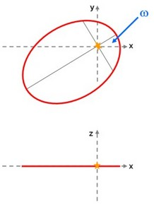
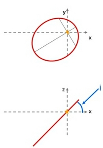
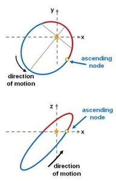

The ascending node (Ω) is one of the orbital elements that must be specified in order to define the orientation of an elliptical orbit. The other orbital elements are inclination, and the argument of perihelion (ω).
The ascending node is usually quoted as the angular position at which a celestial body passes from the southern side of a reference plane to the northern side, hence ‘ascending’. For objects orbiting the Sun, the most convenient reference plane is the orbital plane of the Earth. In other systems, such as orbits of satellites around a planet, a more appropriate reference plane must be identified.
The sequence of images below shows how an elliptical orbit with eccentricity, e, and semi-major axis, a, is rotated relative to a reference axis. For orbits in the Solar System, the x-y plane would coincide with the orbital plane of the Earth. The top row of images is a view down the z-axis (a top view), while the bottom row of images is looking along the y-axis (a side view). The ascending node is indicated by the yellow circle in the right-hand column.
|
 |
 |
 |
| The orientation of an elliptical orbit seen from above (top row of images) and from the side (bottom row of images). left: First, the elliptical orbit is rotated by an angle ω, the argument of perihelion. middle: Next, the orbit is tilted by an angle, i, the inclination. right: Finally, the tilted orbit is rotated such that an object moving around the orbit passes from the lower side of the x-y plane to the upper side at the ascending node. The part of the orbit that is above the reference plane is coloured red, while the part below the reference plane is blue. |
||
The descending node is located 180 degrees (half-way) further around the orbit.